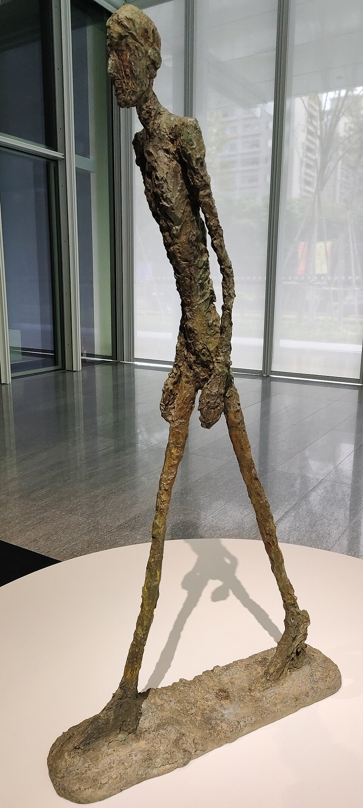
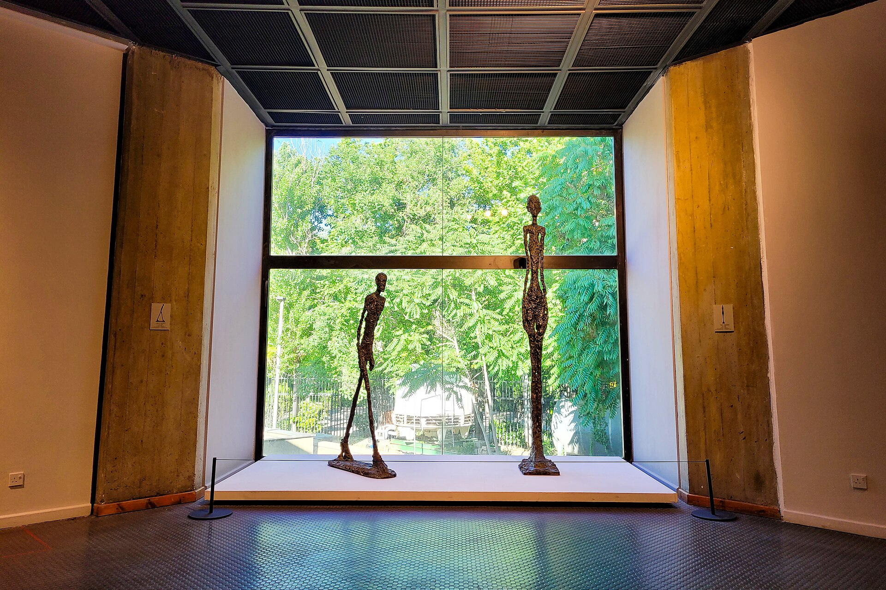

인간은 누구나 걷습니다. 살아 있다는 것은 어쩌면 끊임없이 길 위에 있다는 뜻인지도 모릅니다. 우리는 어딘가를 향해 가지만, 정작 자신이 어디로 향하는지 알지 못할 때가 많습니다.
어떤 사람은 성공을 향해 걷고, 어떤 사람은 잃어버린 것을 찾아 걷습니다. 누군가는 희망을 품고 길을 나서지만, 누군가는 오늘을 견디기 위해 무거운 발걸음을 옮깁니다.
그런데 여기, 어디에서 왔는지도, 어디로 가는지도 알 수 없는 한 사람이 있습니다. 스위스의 조각가 알베르토 자코메티가 만든 〈걸어가는 사람 I〉입니다.

1. 거의 사라질 것 같은 인간이 걷고 있습니다
그의 몸은 기이할 만큼 가늘고 깁니다. 머리는 작고, 어깨는 좁으며, 팔은 몸을 따라 무겁게 늘어져 있습니다. 살과 근육은 거의 사라진 듯하고, 청동 표면에는 무언가에 긁히고 짓눌린 것 같은 거친 흔적이 남아 있습니다. 마치 인간에게서 모든 것을 덜어내고 마지막 남은 형상만 세워 놓은 것 같습니다.
그런데 이상합니다. 그토록 연약해 보이는 사람이 걷고 있습니다.
한쪽 다리는 앞으로 뻗어 있고 다른 쪽 다리는 뒤에 남아 있습니다. 몸은 약간 기울어져 있으며, 커다란 발은 땅을 단단히 딛고 있습니다. 우리는 그가 어디로 가는지 알 수 없습니다. 그가 무언가를 찾아가는 것인지, 무언가로부터 멀어지는 것인지도 모릅니다. 그저 한 가지 사실만 분명합니다. 그는 멈추어 있지 않습니다.
물론 조각은 실제로 움직이지 않습니다. 청동으로 만들어진 인물은 영원히 같은 자세로 서 있을 뿐입니다. 그러나 바로 그 정지된 형상 속에 움직임이 담겨 있습니다. 시간은 멈추었지만 걸음은 계속되는 듯합니다.
어쩌면 이 조각이 우리에게 주는 첫 번째 충격은 인간의 초라함이 아니라, 그 초라함 속에서도 사라지지 않는 움직임일 것입니다.
2. 자코메티는 왜 인간을 이토록 가늘게 만들었을까요?
〈걸어가는 사람 I〉은 1960년에 제작된 작품입니다. 그의 조각은 흔히 제2차 세계대전 이후의 불안과 실존적 고독을 보여 주는 예술로 해석됩니다. 그러나 그의 작업을 전쟁의 상처만으로 설명하기는 어렵습니다.
자코메티는 오랫동안 인간이 실제로 어떻게 보이는지를 탐구했습니다. 가까이서 바라보는 인간과 멀리서 바라보는 인간은 같지 않습니다. 사람이 멀어질수록 몸의 세부는 사라지고, 마침내 희미한 윤곽만 남습니다. 그런데도 우리는 그 희미한 형상 안에서 여전히 한 사람을 알아봅니다.
자코메티가 탐구한 것은 단순한 해부학적 인체가 아니라, 우리의 시선 속에서 나타나는 인간의 존재였습니다. 그에게 조각은 인간의 몸을 정확히 재현하는 작업만이 아니었습니다. 눈앞에 있는 한 사람이 어떻게 존재하는지, 우리가 그 사람을 어떻게 경험하는지를 붙잡으려는 시도이기도 했습니다.
이러한 관심은 그의 작품에서 독특한 조형 언어로 나타납니다. 인체의 비례는 비정상적으로 길어지고, 표면은 거칠어지며, 몸의 부피는 극단적으로 줄어듭니다. 반면 두 발과 보폭은 뚜렷하게 강조됩니다. 여기에는 흥미로운 역설이 있습니다. 몸은 점점 사라지는 것 같은데, 존재감은 오히려 강해집니다.
르네상스의 조각이 인체의 균형과 아름다움을 통해 인간의 존엄을 표현했다면, 자코메티의 조각에서는 균형이 무너지고 육체의 풍요로움도 사라집니다. 그러나 인간의 존엄까지 사라지는 것은 아닙니다. 오히려 모든 장식이 제거된 자리에서 우리는 인간이라는 존재와 정면으로 마주하게 됩니다.
구겐하임 빌바오 미술관은 이 작품의 불안정한 형상과 거친 표면이 인간의 취약성과 보편적 존재 조건을 환기한다고 설명합니다. 또한 자코메티 재단의 작품 기록은 이 조각이 석고 모델을 바탕으로 청동 주조된 작품임을 확인해 줍니다.
여기서 우리는 질문하게 됩니다. 인간을 인간답게 만드는 것은 무엇일까요? 완전한 신체일까요? 강한 힘일까요? 아름다움과 능력일까요? 아니면 모든 것을 잃어버린 듯한 모습에서도 여전히 남아 있는, 설명하기 어려운 존재의 무게일까요?
자코메티의 사람은 아무것도 소유하지 않은 채 걷습니다. 그의 손에는 지팡이도 없고, 등에 짐도 없습니다. 입고 있는 옷도, 자신을 설명해 줄 표정도 없습니다. 그는 어떤 직업을 가진 사람인지, 어느 나라에서 왔는지, 무엇을 이루었는지 말해 주지 않습니다. 사회적 지위와 성취를 나타내는 표지들이 사라진 자리에 그저 한 인간이 있습니다. 그리고 그 인간은 길 위에 있습니다.
3. 시편의 인간도 길 위에 있습니다
이 조각을 오래 바라보고 있으면 뜻밖에도 시편의 첫 장면이 떠오릅니다. 시편 1편은 인간의 존재를 설명하면서 걷는 일, 서 있는 일, 앉는 일을 차례로 언급합니다.
복 있는 사람은 악인들의 꾀를 따르지 아니하며 죄인들의 길에 서지 아니하며 오만한 자들의 자리에 앉지 아니하고
— 시편 1:1, 개역개정
여기에서 주목하게 되는 히브리어 동사가 할라크(הָלַךְ, hālak), 곧 ‘걷다’, ‘가다’라는 말입니다. 이 동사는 실제로 발을 움직여 이동하는 행위를 가리킵니다. 그러나 성경에서는 문맥에 따라 사람이 살아가는 방식이나 행동을 나타내기도 합니다. 시편 1편의 첫 구절에서도 걷는 행위는 단순한 신체적 이동을 넘어 삶의 태도와 연결됩니다.
시인은 두 종류의 길을 대비합니다. 하나는 악인의 길이고, 다른 하나는 여호와의 율법을 즐거워하며 묵상하는 사람의 길입니다. 여기서 길은 단순한 공간이 아닙니다. 사람이 따르는 가치와 삶의 방향을 드러내는 이미지입니다.
우리는 하루에도 수많은 길을 선택합니다. 어떤 말을 할 것인지, 누구의 이야기에 귀 기울일 것인지, 무엇을 위해 시간을 사용할 것인지, 어떤 욕망에 자신을 맡길 것인지 결정합니다. 그러한 선택들이 쌓여 한 사람의 삶을 이룹니다. 우리가 걷는 길은 결국 우리가 어떤 사람이 되어 가는지를 보여 줍니다.
시편 26편에서도 시인은 자신의 삶을 걸음으로 표현합니다.
내가 주의 진리 중에 행하여 허망한 사람과 같이 앉지 아니하였사오니
— 시편 26:3 하반절–4 상반절의 구절을 연결한 인용
여기에서 ‘행한다’는 표현도 삶의 방향과 태도를 드러냅니다. 중요한 것은 발걸음 자체가 아닙니다. 그 발걸음이 놓인 삶의 자리와 기준입니다.
이러한 시편의 언어로 바라보면, 인간은 단순히 어떤 상태에 머물러 있는 존재가 아닙니다. 매일의 선택 속에서 자신의 길을 만들어 가는 존재입니다. 그런 의미에서 우리는 모두 길 위의 사람들입니다.
4. 걸어가는 사람과 할라크의 사람이 만나는 자리
물론 자코메티의 조각을 시편의 신앙고백으로 해석할 수는 없습니다. 자코메티가 이 작품을 통해 성경의 할라크를 표현하려 했다는 근거도 없습니다. 두 작품은 서로 다른 시대와 세계관에서 태어났습니다. 그럼에도 두 세계 사이에는 사유를 자극하는 공명이 존재합니다.
자코메티는 인간이 어떤 모습으로 존재하는지를 묻고, 시편은 인간이 어떤 길을 걸어야 하는지를 묻습니다. 하나는 걷는 인간의 형상을 보여 주고, 다른 하나는 그 걸음의 방향을 질문합니다. 이 차이가 오히려 두 세계를 더욱 풍성하게 만듭니다.

자코메티의 조각에서 인물은 자신의 목적지를 드러내지 않습니다. 그의 앞에는 길이 그려져 있지 않고, 뒤에는 지나온 풍경도 없습니다. 그는 홀로 존재합니다. 반면 시편은 인간의 걸음을 하나님과의 관계 속에서 바라봅니다. 시편 1편의 길은 삶의 선택과 분별을 강조하고, 시편 23편의 길은 목자의 인도하심을 노래합니다. 두 시편은 같은 이야기를 반복하지 않습니다. 하나는 사람이 어떤 길을 선택하는지에 주목하고, 다른 하나는 그 길에서 누구의 돌보심을 받는지 고백합니다.
이 두 시선을 자코메티의 조각 곁에 놓으면 새로운 질문이 생깁니다.
우리는 무엇을 의지하여 걷고 있습니까? 자신의 힘입니까? 목적지에 대한 확신입니까? 아니면 길 위에서 우리를 인도하시는 분에 대한 신뢰입니까?
이 질문은 조각이 직접 대답하는 것이 아닙니다. 예술 앞에 선 우리가 신앙의 언어로 다시 묻는 질문입니다.
5. 한 걸음이 가진 역설
자코메티의 사람은 걷고 있지만, 동시에 영원히 한 걸음 안에 갇혀 있습니다. 그의 앞발은 앞으로 나아가고 있지만, 뒷발은 아직 뒤에 남아 있습니다. 이 모습은 인간 존재의 한 가지 역설을 떠올리게 합니다. 우리는 늘 앞으로 나아가면서도 지나온 삶을 완전히 떠나지 못합니다.
과거의 후회와 상처를 간직한 채 미래를 향해 걷습니다. 새로운 시작을 원하면서도 오래된 습관에서 벗어나기 어려워합니다. 변화를 갈망하지만 익숙한 자리에 머물고 싶어 합니다. 나아가려는 마음과 머무르려는 마음, 희망과 두려움, 자유와 속박이 한 사람 안에 함께 있습니다.
자코메티의 인물이 특별한 이유는 이러한 인간의 복잡성을 화려한 몸짓으로 설명하지 않는다는 데 있습니다. 그는 그저 걷습니다. 그러나 그 단순한 자세가 때로는 수많은 말보다 더 많은 것을 생각하게 합니다.
여기에서 한 가지를 더 물을 수 있습니다. 우리는 앞으로 나아가기 때문에 살아 있는 것일까요, 아니면 살아 있기 때문에 다시 걸을 수 있는 것일까요?
현대사회는 끊임없이 움직이는 사람을 요구합니다. 더 많은 일을 하고, 더 빠르게 성장하고, 더 높은 자리에 도달해야 한다고 말합니다. 그러한 세계에서 걸음의 가치는 종종 속도와 성과로 평가됩니다. 그러나 시편의 길은 다른 기준을 제시합니다. 얼마나 빨리 가느냐보다 어떤 길을 따르느냐가 중요합니다. 얼마나 멀리 도달했느냐보다 무엇을 기뻐하고 무엇을 삶의 기준으로 삼느냐가 중요합니다.
그렇다고 신앙의 걸음을 끊임없는 전진이나 쉼 없는 노력으로만 이해해서는 안 됩니다. 때로는 멈추어야 할 길이 있고, 돌아서야 할 길이 있으며, 다른 사람의 손을 붙잡고 함께 걸어야 할 길도 있습니다. 시편의 사람은 무조건 앞으로 달려가는 사람이 아닙니다. 자신의 걸음을 돌아보고 그 방향을 분별하는 사람입니다. 이것이 자코메티의 조각을 통해 우리가 새롭게 생각해 볼 수 있는 ‘한 걸음의 철학’입니다.
6. 우리는 혼자 걷고 있는가
자코메티의 조각에서 가장 인상적인 요소 가운데 하나는 고독입니다. 주변에는 다른 사람이 없습니다. 그를 기다리는 사람도, 그를 따라오는 사람도 보이지 않습니다. 그는 혼자 걷고 있습니다.
이 고독은 현대인의 삶을 떠올리게 합니다. 우리는 수많은 사람과 연결되어 있지만, 자신의 삶을 대신 살아 줄 사람은 아무도 없다는 사실을 경험합니다. 누군가와 함께 일하고, 함께 식사하고, 같은 공간에 머물러도 결국 자신만이 감당해야 하는 선택과 시간이 있습니다. 그때 인간은 자신의 존재가 얼마나 연약한지 깨닫습니다.
그러나 고독이 반드시 절망을 의미하는 것은 아닙니다. 고독은 때로 자신이 누구인지 묻게 하고, 무엇을 위해 살아가는지 돌아보게 만듭니다. 그리고 바로 그 자리에서 신앙은 인간의 고독을 다른 시선으로 바라보게 합니다. 시편 23편은 이렇게 고백합니다.
여호와는 나의 목자시니 내게 부족함이 없으리로다.
— 시편 23:1, 개역개정
이 고백은 삶에 어려움이나 외로움이 없다는 선언이 아닙니다. 오히려 시편은 사망의 음침한 골짜기를 지나는 순간까지 이야기합니다. 길은 여전히 어둡고, 위험은 사라지지 않았습니다. 그러나 시인은 그곳에서도 자신이 완전히 홀로 버려진 존재가 아니라고 고백합니다. 그에게는 목자가 있습니다.
여기에서 두 세계의 차이가 선명해집니다. 자코메티의 조각은 우리 앞에 홀로 걷는 인간을 세워 놓습니다. 반면 시편 23편은 보이지 않는 인도하심을 신뢰하며 걷는 인간의 목소리를 들려줍니다. 하나는 침묵하는 형상이고, 다른 하나는 하나님을 향한 고백입니다. 그 둘을 함께 바라볼 때 우리는 자신의 삶을 조금 더 깊이 성찰하게 됩니다.
나는 지금 누구와 함께 걷고 있습니까?
내가 의지하던 것들이 무너졌을 때에도 내 삶을 지탱해 주는 것은 무엇입니까?
내 앞에 놓인 길을 모두 이해하지 못하더라도 한 걸음을 내디딜 수 있는 이유는 어디에 있습니까?
7. 목적지보다 먼저 물어야 할 것
우리는 흔히 인생을 여행에 비유합니다. 여행에는 출발점이 있고 목적지가 있습니다. 그래서 사람들은 자신의 삶도 어느 지점에 도달해야 완성될 것처럼 생각합니다. 좋은 직장을 얻으면, 경제적으로 안정되면, 오랫동안 바라던 일을 이루면 비로소 행복해질 것이라고 기대합니다.
하지만 하나의 목적지에 도착하면 또 다른 길이 나타납니다. 인간의 삶은 목적지에 도착하는 것으로 간단히 설명되지 않습니다. 목적지에 도달하기까지 어떤 사람이 되었는지, 누구와 함께했는지, 무엇을 사랑하고 무엇을 잃었는지도 그 삶을 구성합니다.
자코메티의 인물에게는 목적지가 보이지 않습니다. 그의 앞에 펼쳐질 미래를 우리는 알 수 없습니다. 그러나 그가 걸음을 내딛고 있다는 사실만큼은 눈앞에 남아 있습니다. 시편은 이 장면에 하나의 질문을 덧붙입니다.
당신은 어떤 길을 걷고 있습니까?
이 질문은 성공했는지 실패했는지를 묻는 질문이 아닙니다. 삶의 중심에 무엇을 두고 있는지, 어떤 가치를 따라 선택하고 있는지, 어디에서 자신의 존재 이유를 찾고 있는지 묻는 질문입니다. 때로는 많이 걸었지만 방향을 잃어버릴 수 있습니다. 반대로 아주 조금밖에 나아가지 못했어도 자신이 걸어야 할 길을 발견할 수 있습니다. 그러므로 중요한 것은 걸음의 크기만이 아닙니다. 우리가 걸어가는 방향, 그리고 그 길 위에서 어떤 사람이 되어 가는가 하는 문제입니다.
8. 오늘, 우리에게 남겨진 한 걸음
자코메티의 〈걸어가는 사람〉 앞에 다시 서 봅니다. 가늘고 거친 몸. 앞으로 기울어진 머리. 서로 다른 자리에 놓인 두 발. 인물은 여전히 침묵하고 있습니다. 우리는 그가 무엇을 생각하는지 알 수 없습니다. 그의 슬픔도, 희망도, 목적지도 확인할 수 없습니다.
그럼에도 그 모습은 이상하게 우리의 삶과 닮아 있습니다. 우리 역시 완전한 모습으로 살아가지 않기 때문입니다. 누구에게나 부족한 부분이 있고, 해결되지 않은 문제들이 있으며, 때로는 자신의 힘으로 감당하기 어려운 날들이 있습니다. 그러나 인간의 가치는 얼마나 완전한 모습으로 서 있느냐에 따라서만 결정되지 않습니다. 우리는 연약함 속에서도 살아가고, 관계를 맺으며, 의미를 찾고, 다시 선택합니다.
그러한 삶의 한가운데에서 시편은 길에 관한 질문을 들려줍니다.
어디를 향해 걷고 있습니까?
누구의 목소리를 따라 걷고 있습니까?
그리고 그 길에서 무엇을 신뢰하고 있습니까?
자코메티의 조각은 걸어가는 인간을 보여 줍니다. 시편은 그 인간에게 자신의 길을 돌아보도록 초대합니다. 두 세계는 서로 다른 언어로 이야기하지만, 그 사이에서 우리는 자신의 삶을 바라보게 됩니다.
어쩌면 오늘 우리에게 필요한 것은 거창한 도약이 아닐지도 모릅니다. 더 빨리 걷는 일도, 남들보다 앞서가는 일도 아닐 수 있습니다. 자신이 걷고 있는 길을 돌아보는 일. 잘못된 방향이라면 돌아서는 일. 그리고 다시 걸어야 할 길을 발견하는 일. 그것이 오늘 우리에게 주어진 가장 중요한 한 걸음일 수 있습니다.
자코메티의 사람은 청동 위에 영원히 같은 자세로 서 있습니다. 그러나 그 앞에 선 우리는 실제로 걸어갈 수 있습니다. 조각은 한 걸음에 머물러 있지만, 우리의 다음 걸음은 아직 결정되지 않았습니다. 그것이 예술이 우리에게 남기는 여백이며, 시편의 언어가 우리의 삶에 던지는 질문입니다.
오늘도 우리는 길 위에 있습니다.
그리고 아직, 걸어갈 길이 남아 있습니다.
예술은 우리가 어떤 모습으로 살아가는지 보여 주고, 신앙은 그 삶을 어떤 방향으로 이끌어 갈 것인지 묻게 합니다. 자코메티의 고독한 인간과 시편의 길 위에서, 우리는 다시 자신의 발걸음을 돌아봅니다.